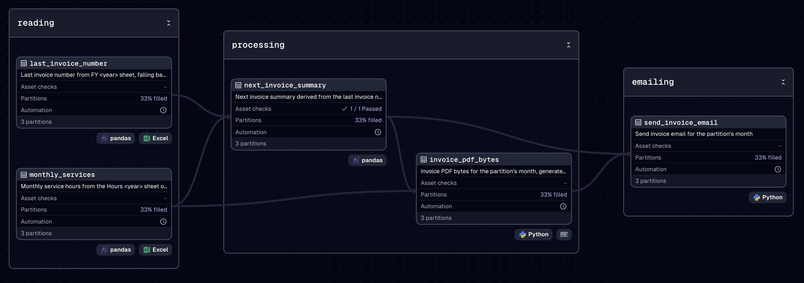
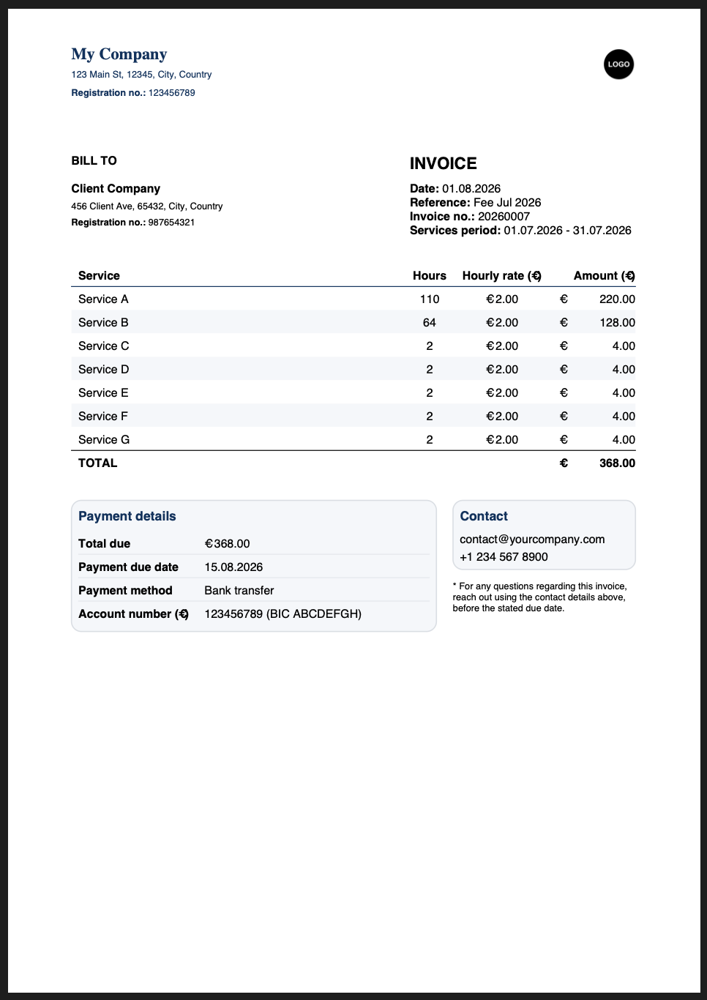

Invoicing Pipeline Lite
Aug 2026
Length: 1w (at 1.0 FTE)
Programming languages: Python (Dagster, openpyxl, Pandas, ReportLab,
smtplib)
Data: An Excel workbook with a sheet listing monthly service
hours (month, service, hours, and amount) and a sheet tracking invoice history
Problem description:
Build a Dagster pipeline that reads monthly contractor hours from
an Excel workbook, generates a branded PDF invoice, and emails it directly to
the client
Approach & Results:
The pipeline is built as a Dagster lineage with monthly asset partitions, so one run
corresponds to one billing month, as shown in the asset graph below:

The invoice history sheet is read first to retrieve the last issued invoice number, falling back to the previous year if the current one has none yet. If needed, the invoice number can also be overridden manually via a runtime config. In parallel, the hours sheet is read and filtered to the partition's month, returning the services to bill.
The two assets above are then combined into the next invoice summary, deriving all the invoice metadata alongside the total hours and amount. A blocking asset check computes the expected working hours in the respective month and compares them against the total hours logged, failing the run if the two do not match, before any PDF or email is produced.
Once validated, the invoice summary is rendered into a branded PDF using
ReportLab. This contains a header with company and client details, an
itemized services table with a total row, a payment summary block, and a
contact box. The summary data is then rendered into a styled HTML email with the
company logo embedded inline. The email is sent over SMTP with the PDF
attached, to the client and any Cc addresses included, as shown below with
mock data:


A Dagster schedule runs the job automatically on the 1st of every month for the previous month's data, replacing a manual task with an automated workflow that only sends an invoice once the details have been validated. The invoice and email content, styling, and logo can all be customized via environment variables and constants to fit a different company and client.